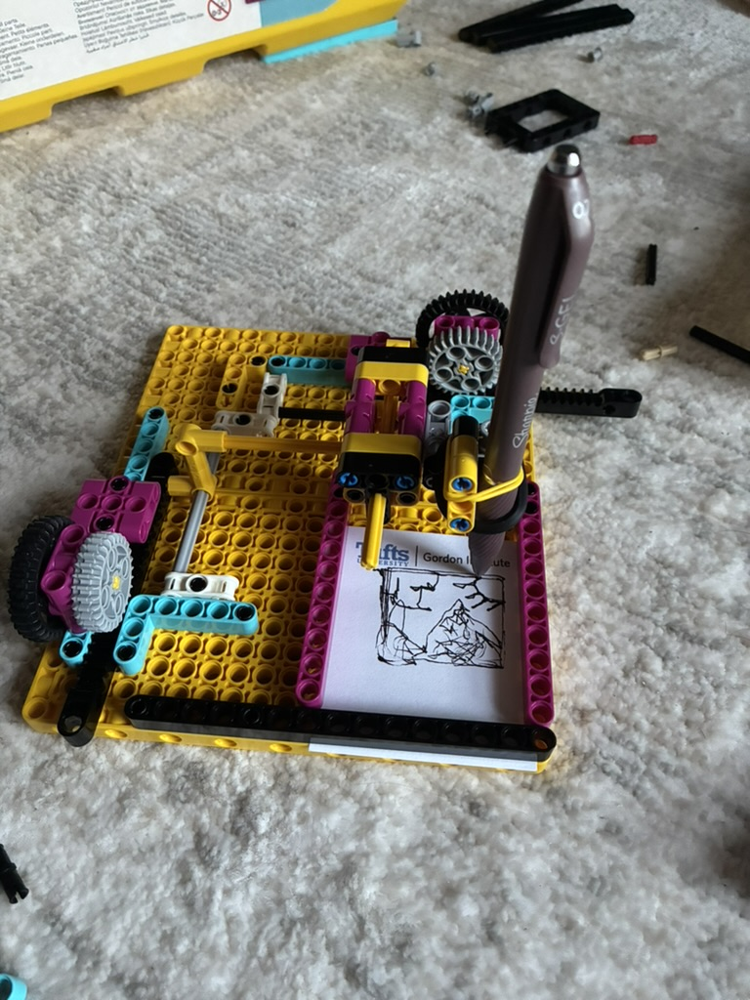

I wasn’t entirely sure what I wanted to make with this project or what I aspect of myself I wanted to share. Anyway, I decided I am a big fan of interesting mechanical systems and doodling. Here, I present the Doodlebot3000. Although I am not that great at doodling, I do find it enjoying. And with this little machine, you can make all your doodling much harder. If you really squint your eyes, you can make out an image of some mountains, the sun, and some text saying “Hi” on the right image. I really enjoy hiking and trying new mountains whenever I can, so I figured I’d try to share that via the drawing. Maybe someone who’s more artistic could draw something cool with this.